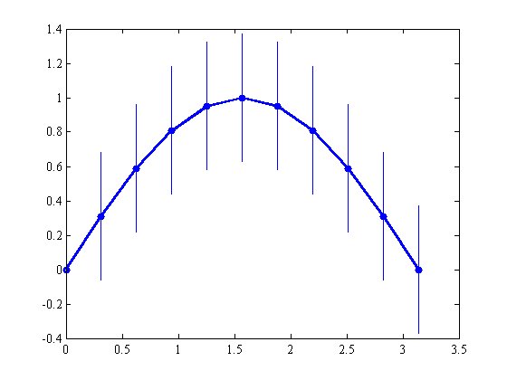
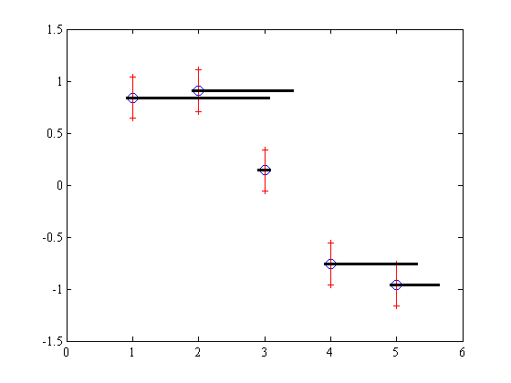

errbar documentation
This function plots vertical or horizontal errorbars. Error bars may be symmetic or asymmetric about their data points.
Contents
Syntax
errbar(x,y,E) errbar(x,y,L,U) errbar(...,'horiz') errbar(...,LineSpec) h = errbar(...)
Description
errbar(x,y,E) plots vertical lines of length 2*E centered on x,y. E may be a scalar or a vector matching the size of x.
errbar(x,y,L,U) specifies different lower and upper bounds of error bars. L and U may be mixed vector and scalar.
errbar(...,'horiz') plots error bars horizontally.
errbar(...,LineSpec) specifies line type.
h = errbar(...) returns a handle h of plotted error bars.
Usage note
This function is very similar to Matlab's built-in errorbar function, but the two functions differ in the following ways:
- errbar supports horizontal error bars with the simple inclusion of the 'horiz' tag.
- errbar does not plot perpendicular lines at the ends of error bars, because in my experience, those lines tend to be garrish and distracting, and they do not automatically rescale when zooming. If you'd like perpendicular lines at the ends of your errbars, you can get a similar effect by specifying a LineStyle '+-'.
- errbar does not plot markers at datapoints x,y. This is intentional, because it's rare that I want my error bars to have the same linewidth and bold coloring
- errbar allows error values to be entered as a scalar, whereas Matlab's built-in errorbar function forces users to populate an array of redundant values.
Example 1: Simple vertical error bars
Stealing this example from the documentation for Matlab's built-in errorbar function:
X = 0:pi/10:pi; Y = sin(X); E = std(Y); plot(X,Y,'bo-','linewidth',3) hold on errbar(X,Y,E) % <- Here's the errbar function
Example 2: Formatted error bars
Formatting with errbar is as simple as any LineSpec formatting. Each error bar is made of only two endpoints and a line connecting them, so any marker properties will be applied to the ends of the error bars. Here's a simple red error bar with plus signs at its ends:
x = 1:5; y = sin(x); figure plot(x,y,'bo','markersize',10) hold on errbar(x,y,.2,'r+-')

Example 3: Horizontal error bar
Now we'll add horizontal error bars to the plot above. For the lower bound we'll specify a scalar, and for the upper bound some random numbers. Make the error bars thick and black with 'k','linewidth',3 :
xLowerUncertainty = .1; xUpperUncertainty = (2*rand(size(x))).^2; errbar(x,y,xLowerUncertainty,xUpperUncertainty,'k','linewidth',3,'horiz')
Author Info
The errbar function was written by Chad A. Greene of the University of Texas at Austin's Institute for Geophysics, April 2015.